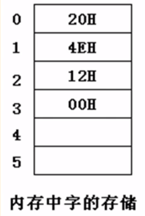
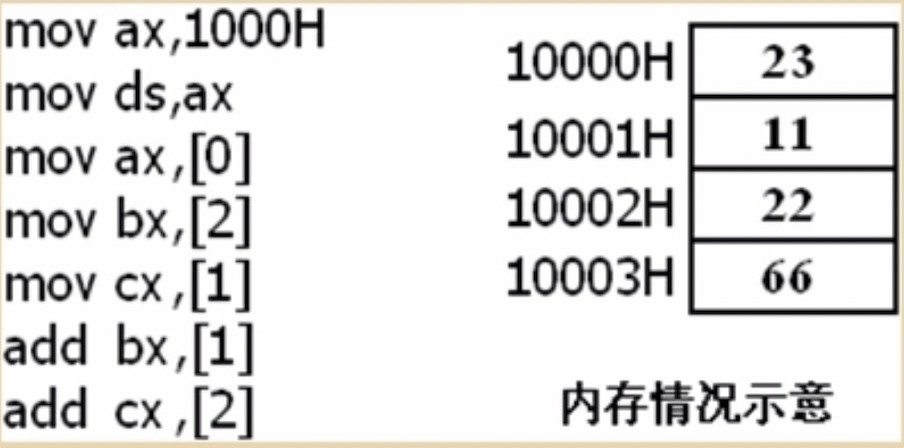
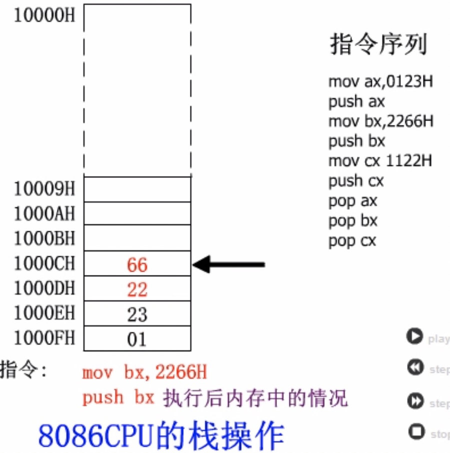
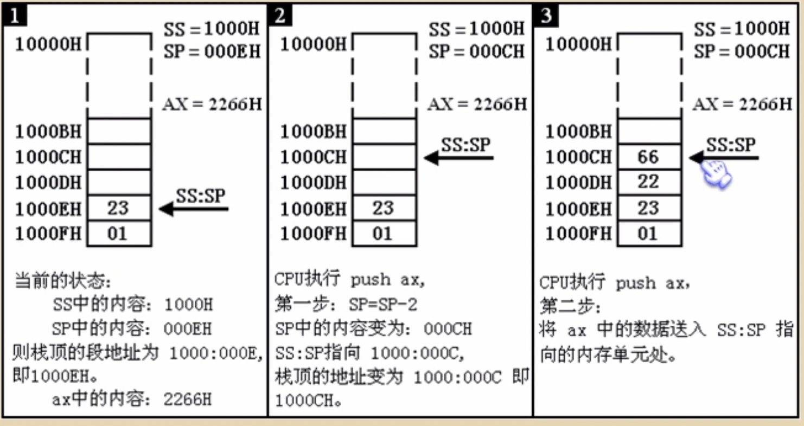
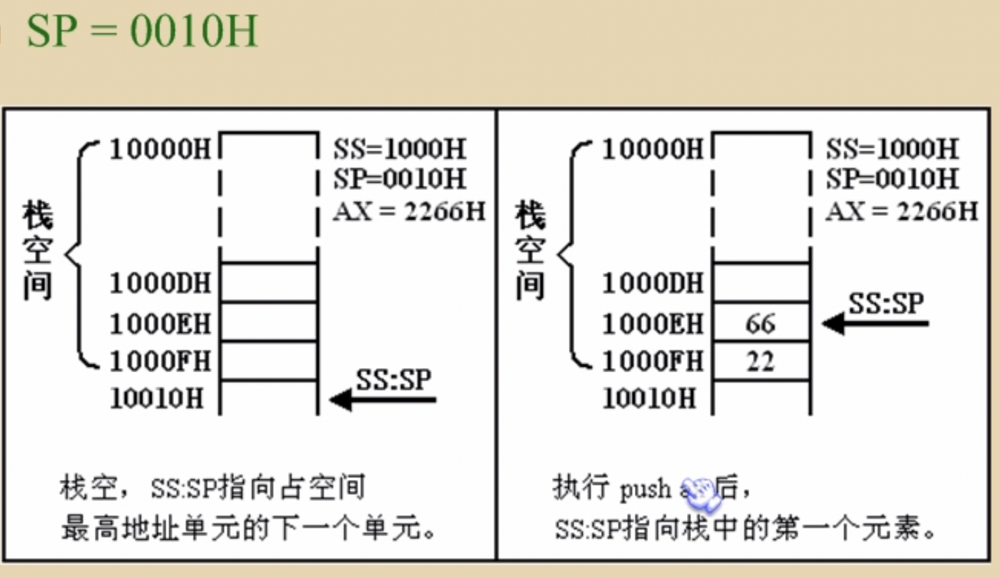
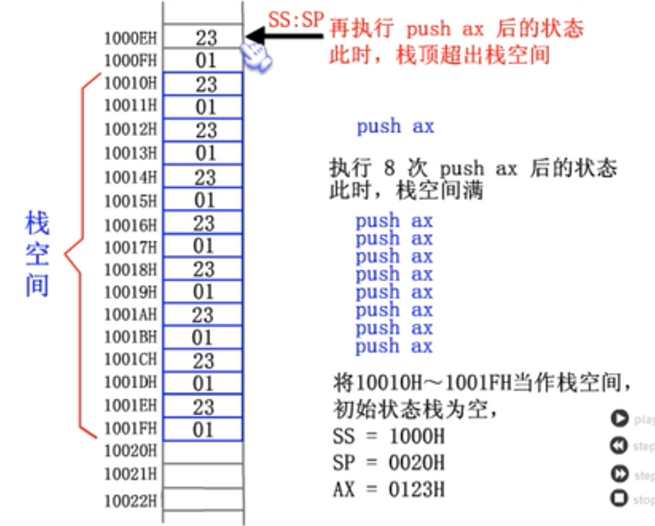
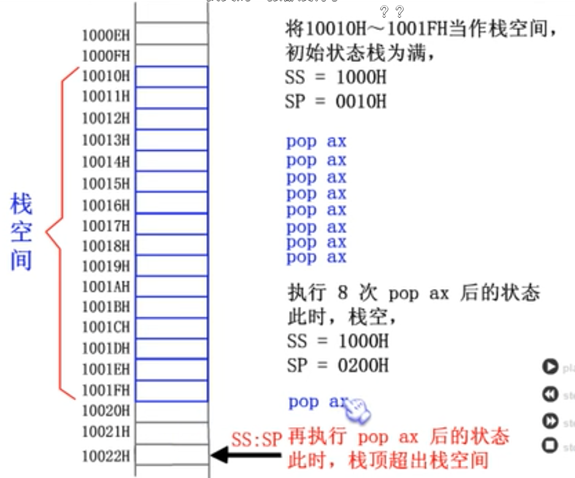

内存中字的存储

DS（段地址） & [address]
例如：读取10000H单元的内容
mov bx,10000H ds段寄存器不能直接赋值，需要通用寄存器
mov ds,bx
mov al,[0] 内存送入寄存器
[...]偏移地址
[]说明操作对象是一个内存单元
[0]说明这个内存单元的偏移地址是0 它的段地址默认放在DS中
mov [0],al 寄存器送入内存
流程： 数据 → 通用寄存器 → 段寄存器
解释：
mov
1：将数据直接送入寄存器
2：将一个寄存器中的内容送入另一个寄存器
3：将一个内存单元中的内容送入一个寄存器 （例 mov al,[0]）
mov 寄存器名，内存单元地址
字的传送

mov add sub
mov 寄存器,数据 mov ax,6
mov 寄存器,寄存器 mov bx,ax
mov 寄存器,内存单元 mov ax,[0]
mov 内存单元,数据 mov [0],ax
mov 段寄存器,寄存器 mov ds,ax
mov 寄存器,段寄存器 mov ax,ds
add 寄存器,数据 add ax,8
add 寄存器,寄存器 add ax,bx
add 寄存器,内存单元 add ax,[0]
add 内存单元,寄存器 add [0],ax
sub 寄存器,数据 sub ax,9
sub 寄存器,寄存器 sub ax,bx
sub 寄存器,内存单元 sub ax,[0]
sub 内存单元,寄存器 sub [0],ax
数据段
将123B0H~123BAH的内存单元定义为数据段,累加前三个单元,代码如下:
mov ax,123BH
mov ds,ax 将123BH送入ds中,作为数据段的段地址
mov al,0 用al存放累加结果
add al,[0] 将数据段第一个单元(偏移地址为0)中的数值加到al中
mov al,[0] = mov al,0 + mov al,[0]
add al,[1] 将数据段第二个单元(偏移地址为0)中的数值加到al中
add al,[2] 将数据段第三个单元(偏移地址为0)中的数值加到al中
小结1
字在内存中存储时,用两个连续的内存单元来存放,字的低位字节存放在低地址单元中,
高位字节存放在高地址单元中
用mov指令访问内存单元,可以在mov指令中只给出单元的偏移地址,此时,段地址默认
在ds寄存器中
[address]表示一个偏移地址为address的内存单元
栈
先进后出 PUSH(入栈) POP(出栈)

段寄存器SS 存放栈顶的段地址
寄存器SP 存放栈顶的偏移地址
结论: 任意时刻,SS:SP指向栈顶元素
push ax
1: SP=SP-2
2: 将ax中内容送入SS:SP指向的内存单元处,SS:SP指向新栈顶

当栈为空时,SP偏移地址指向下一个内存地址

栈顶超界问题
溢出的内存为未知程序使用的内存,会很危险
PUSH溢出

POP溢出

PUSH POP 指令
可以在寄存器和内存之间传送数据
push 段寄存器 PUSH
POP 段寄存器
PUSH 内存单元 PUSH [0] 找到DS段地址和[0]偏移地址数据推进栈
POP 内存单元 POP [2]
问题: 栈空间10000H~1000FH(ss=1000,偏移地址指向最下边地址+2), 将AX bx ds 数据入栈
mov ax,1000H 段地址
mov ss,ax 设置栈的段地址,ss=1000H,数据不能直接送入段寄存器,用ax中转
mov sp,0010H 设置栈顶的偏移地址,因为栈为空,则需+2
上面三条指令设置栈顶地址,注意栈的大小
push ax
push bx
push ds
...